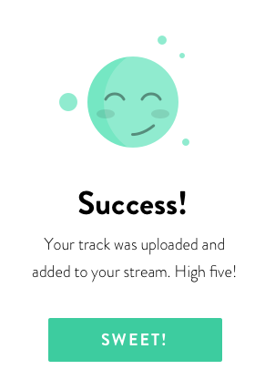

<!-- <div>
  <h2 mat-dialog-title style="text-align: center;">Sure?</h2>
  <mat-dialog-content class="mat-typography">
    {{data.message}}
    
  </mat-dialog-content>
  <mat-dialog-actions align="center">
     <button mat-button mat-dialog-close>Cancel</button> 
     <button mat-button class="custom_success_btn" [mat-dialog-close]="true" cdkFocusInitial>Yes</button> 
    <button mat-raised-button class="custom_success_btn">Success</button>
  </mat-dialog-actions>

</div> -->

